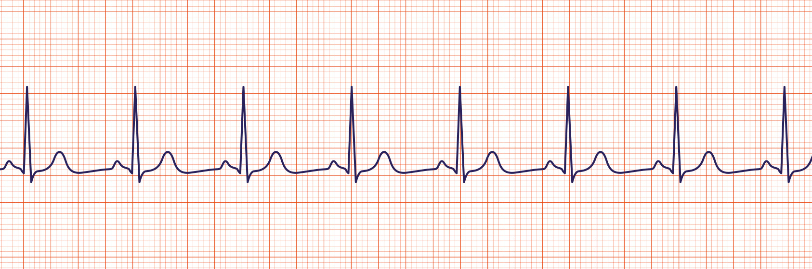

Rhythm is the pattern of sounds in music, forming the foundation of a song. It dictates the timing and pace, providing the overall feel and movement of the music. Rhythm can be simple and repetitve or complex and varied, prividing structure and dynamics for music. Two primary types of rhythm are syncopated, which follows a regular beat and is repetitve or simple, and non-syncopated rhtyhm, which is more grrovey and unpredictable.

Copyright - Henry Balducci 2024.